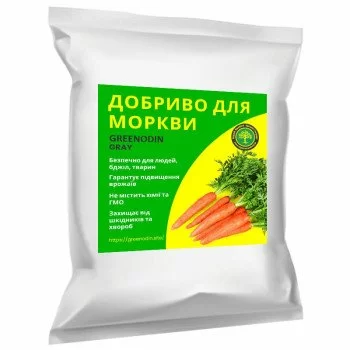
GREENODIN GRAY carrot fertilizer
GREENODIN GRAY organic fertilizer for carrot. Spread the granules over the bed before sowing and work them into the soil; the prolonged action sustains nutrition until the roots are harvested.
Base line
- Type
- Complex, 100% organic, slow-release, with live bacteria
- Form
- Granules
- Manufacturer
- Ukraine
- Certification
- Organic Standard, Regulation (EU) 2018/848
- Shelf life
- 3 years after opening
- Safety
- Safe for people, bees and animals
- SKU
- GR-carrots
GREENODIN GRAY organic fertilizer for carrot. Spread the granules over the bed before sowing and work them into the soil; the prolonged action sustains nutrition until the roots are harvested.
- Higher soil fertility
Improves the agronomic and biological properties of the soil.
- Lower toxicity
Reduces soil toxicity and suppresses plant-pathogenic microorganisms.
- Plant vitality
Boosts plant vitality and disease resistance.
- Water savings
Cuts irrigation water use by up to 40%.
- Stress tolerance
Helps plants adapt to abiotic and biotic stress.
- Long-lasting action
The cumulative effect lets you reduce the rate from 250 to 80 kg/ha by season 6.
| Natural mineral components | Leonardite enriched with humic and fulvic acids: natural nutrition for plants and beneficial bacteria |
|---|---|
| Amorphous silicon | Maintains the right pH, stores and structures water and feeds roots through capillary action |
| Macro- and micronutrients | For plant growth and stress resistance |
| Beneficial bacteria | Beneficial soil microorganisms that kick-start humus formation |
| Organic matter (C) | at least 50–55% |
| Nitrogen (N) | at least 150 mg/100 g |
| Phosphorus (P₂O₅) | at least 150 mg/100 g |
| Potassium (K) | at least 200 mg/100 g |
- Acidity: brings soil acidity to the level the plant needs
- Microflora: suppresses pathogenic soil flora
- Humus formation: creates conditions for natural humus formation and beneficial bacteria
- Soil quality: improves soil quality
- Phytotoxicity: reduces soil phytotoxicity
- Immunity: strengthens the plant's immune system
- Effect: long-lasting, so the rate can be reduced by 20% every season
- Pests: repels pests
- Stress: increases stress resistance
- Frost hardiness: builds frost hardiness
- Drought and heat: increases drought and heat tolerance
- Watering: reduces watering needs
Carrots are grown successfully in practically all soil and climate zones of Ukraine, as in the world as a whole. Carrot is a biennial plant: in the first year it forms a rosette and a root, in the second an inflorescence and seeds. For commercial use, the root at technical maturity (first year of life) is what matters. That is why it is so important to create favourable conditions, including soil cultivation, to grow it successfully and obtain large, high-quality yields. GREENODIN GRAY complex organic fertilizers for carrot cope with this task well.
Carrot growing technology
Carrot growing technology involves many factors, listed below, and if you follow them you can confidently achieve high results in the form of large, high-quality carrot yields.
Choosing the site for carrots
For carrot sowing, the best soils are well-aerated, highly fertile and light in texture, which favors optimal development of the central root. On heavy soils growth is hindered and slowed, the taste and other sensory qualities of the roots get worse, and fungal disease increases. Carrot is not very demanding about soil acidity; pH from 5.0 to 8.0 suits it.
Soil acidity below pH 5.0 hurts seed germination very badly and disrupts nutrient uptake. The right pH is easily secured by applying 25 g per sq.m of the complex organic fertilizer GREENODIN GRAY. As for terrain, fields with a gentle slope suit best, because on steep fields intense rainfall washes away seeds or seedlings.
Soil preparation for carrots
When choosing a tillage system, remember that carrot is a root crop whose root system sits deep in the soil. That is why carrots need deep tillage. The depth of primary tillage depends greatly on the thickness of the fertile layer and the previous crop: after vegetables or late silage crops, plough without stubble breaking. After stubble predecessors (legumes, cereals, perennial grasses), stubble breaking is included, with a depth set by the type of weed infestation.
So with many annual weeds, stubble breaking is done to 6-8 cm, and where couch grass is present two diskings to 10-12 cm are applied. Ploughing for carrots goes to 22-25 cm, and by some data even 28-30 cm. In the primary tillage system you can also chisel across the ploughing to 40-70 cm (if fertilizers, gypsum or lime were applied).
Primary tillage should include the organic fertilizers GREENODIN, which improve soil fertility, raise the supply of nutrients to plants from the earliest growth stages, and raise the quality of the roots obtained. As a universal solution, it is better to use GREENODIN GRAY with pH 7.0, which neutralizes soil acidity to the fullest extent.
Spring tillage includes moisture harrowing and cultivation to a depth of 6–8 cm. On fields heavily infested with weeds, cultivation to the seeding depth is done before sowing. The soil is rolled before sowing. To obtain long-rooted carrots, beds are formed with a special rotary cultivator. Beds or ridges can be prepared in spring or late autumn. The soil density in the bed should be such that it does not sink underfoot. Ridges are formed 18–30 cm high and 20 cm wide at the top.
Carrot varieties
Carrot varieties and hybrids: Nantes, Daryna, Chantenay, Abaco F1, Flakkee and Berlikum, Naryna, Argo, Katrin, Bolthex, Krasavka, Red Core, Kuroda Chantenay, Campino, Super Muscat, Queen of Autumn and others. By length of the growing season, ultra-early carrot varieties and hybrids ripen in 60 days and late ones in 130–140 days. Seeds of early varieties are sown for bunching and the fresh market, and late-ripening, high-yielding carrots with good keeping quality for storage. Applying GREENODIN at sowing provides the most favourable conditions for good establishment and seed development.
Preceding crops for carrots
Carrot is demanding about crop rotation and can be grown in field, fodder and vegetable rotations. Carrots can return to the same place after 3–4 years. Continuous or monoculture carrot growing reduces yield, spreads diseases and pests and lowers the keeping quality of roots. Using GREENODIN makes it possible to grow carrots as a monoculture without yield losses and prevents diseases thanks to the complex composition and action of GREENODIN itself.
The best preceding crops for carrots in field rotations are winter crops and legumes; in fodder rotations, winter crops for green fodder, maize for green fodder and silage; in vegetable rotations, courgettes, radishes, garlic, legumes, early cabbage, cucumbers, onions and tomatoes. Placing carrots near potato, kohlrabi and maize crops is unfavourable. Poor preceding crops for carrots are beet, celery, parsley and potato.
To reduce the negative effect of any preceding crop, GREENODIN fertilizer should be applied in growing technologies.
Fertilizers for carrots
Fertilizing carrots takes into account nutrient removal per unit of produce: to form 1 t of yield the crop takes up 2.63 kg of nitrogen, 1.2–1.5 kg of phosphorus and 4.2–4.8 kg of potassium. Specific fertilizer rates can only be calculated from soil agrochemical analysis data. The best results in supplying carrot plants with macro- and micronutrients come from applying GREENODIN organic fertilizers for carrot, which in addition contain nitrogen-fixing, potassium- and phosphorus-mobilising bacteria that provide the stated amounts of macronutrients.
Fertilizers for organic carrots
Organic fertilizers are applied to the previous crop, because applying organic matter directly under carrots can reduce the marketability of the root through stronger growth of lateral roots.
The ideal complex solution for applying organic fertilizers directly to carrots is GREENODIN, with application depending on soil acidity:
- on neutral and acidic soils with pH <6.0, the organic fertilizer GREENODIN GRAY is applied at 25 g/sq. m (250 kg/ha);
- on soils with an alkaline reaction (pH >7.5), GREENODIN BROWN is applied at 25 g/sq. m (250 kg/ha).
Thanks to the cumulative action of every type of GREENODIN, the maximum rate of 25 g/m² (250 kg/ha) can be reduced to 8 g/m² (80 kg/ha) by the 6th season by cutting it by 20% each season with no loss of effectiveness, which means substantial savings.
Feeding carrots
Carrots respond well to micronutrients, in particular copper, boron, manganese and others. Fertilizers can also be applied with irrigation water (fertigation). If a nutrient deficiency appears during the growing season, feeding can be done 1.0–1.5 months after carrot emergence. For feeding, GREENODIN fertilizers intended for primary tillage are effective; they can:
- Stimulate plant growth and raise the quantity and quality of the harvest;
- Improve plant adaptation to abiotic and biotic stresses;
- Reduce soil toxicity and suppress phytopathogens;
- Improve moisture retention, saving up to 40% of irrigation water;
- Raise soil fertility.
Sowing carrots
Choose a well-drained, well-moistened spot with enough sunlight and prepare the soil with GREENODIN; carrots are then sown straight into the permanent place, since transplanting seedlings is not recommended. The recommended soil temperature for sowing carrots is 10-15 degrees Celsius. Seed depth is 2.5-3 cm, or 1.5-2 cm on heavy soils.
Timing and methods of sowing carrots
Carrot seed preparation for sowing includes calibrating, warming, treating and so on. Large seed (over 2 mm) is used for sowing. Air-heat treatment lasts from 3-5 days to 10-15 days. The seed is treated 2-3 days before sowing. The seeding rate by count depends on the end use: for winter sowing 1.5-2.0 million per ha, for early produce 0.8-0.9 million per ha, for fresh market and storage 1.0-1.4 million per ha, for processing 1.0-1.2 million per ha. By weight: 4.5 kg/ha for wide-row sowing, 6 kg/ha for band, 6-8 kg/ha for wide-band and 10 kg/ha for continuous row sowing.
Thin stands of late carrots can cause the roots to crack.
The best sowing dates for carrots come when the soil is physically ripe, which on the calendar is late March to early April. For a late crop, carrots are sown 2-3 weeks later (mid-April to late May). Winter sowing is done in early November. Summer sowing after early crops (early cabbage, lettuce, radish, cucumber, beet) is also possible. In that case use early carrot varieties and hybrids, sown no earlier than 20 July.
Growing carrots from transplants is not recommended, because young roots grow crooked.
For growing carrots, ridge and ridgeless, row or wide-row sowing is used. Depending on the machinery size, the row spacing is 30–45 cm and the in-row plant spacing 2.5–3.0 cm. With the band method, seeds are sown in 4 lines 20–30 cm apart, and the following bands at a distance equal to the width of the tractor wheels. Plants are spaced 2.5–3.5 cm apart in the row.
It is preferable to grow carrots on beds. Two rows of seed are sown per bed, with an inter-row width of 65–75 cm and a 6 cm interval between the lines within a band.
Water immediately after sowing. The seeds swell and germinate slowly. The first shoots will appear no sooner than 14–21 days later.
Caring for carrot crops
During the carrot growing season, feeding, inter-row loosening and protection against weeds, diseases and pests must be carried out on time. The first care operation for root crops is post-sowing rolling. 4–6 days after sowing, pre-emergence harrowing is done, during which herbicides are applied to the carrot crop (prometryn 1.5–2.5 kg/ha, linuron 1.5–3 kg/ha). During the growing season, 5–6 inter-row cultivations are carried out to break the crust and improve soil aeration.
Further crop care consists of 1–2 inter-row loosenings and control of root pests and diseases.
Insecticides and fungicides are usually used against diseases and pests. The most common carrot pests are carrot fly, moths, wireworms, aphids, leafhoppers and thrips. The most frequent carrot diseases are powdery mildew, alternaria, sclerotinia, phoma, rhizoctonia and fruit rot.
A series of preventive fungicide treatments is planned to control diseases. They involve applying contact products (copper-based ones, which isolate and destroy the fungus on the leaf surface).
The mobile silicon in GREENODIN provides additional protection against fungal diseases and pests by strengthening plant cells and their coverings as a whole. Incidentally, using the powdered form of the silica component, tripoli, as a natural insecticide helps reduce the use of chemical products.
Watering carrots
Irrigation is very important for obtaining a good carrot crop. The irrigation rate in the first growth and development phases may be 40–50 m³ per hectare, and in later periods it can be increased to 80 m³ per hectare. The GREENODIN component has high moisture absorption and can hold water on a micro scale. Applying GREENODIN to the soil helps retain moisture in it, which reduces the need for irrigation and promotes better plant growth. GREENODIN also helps retain moisture in the soil during downpours, which reduces soil erosion and supplies the soil with nutrients.
Harvesting carrots
Carrot harvesting can begin when the roots reach the required size and the tops change colour. Carrots are harvested by hand and mechanically. 2–3 weeks before harvest, irrigation is stopped completely to avoid fruit cracking during harvest. For early carrots and bunched produce the period without watering is much shorter. For mechanised harvesting, converted potato and beet harvesters, various diggers and special root-crop diggers (KKG-1.4) are used. Using GREENODIN organic fertilizers, which contain silicon, improves the resistance of carrot roots to mechanical damage, which also improves their storage.
Carrot plant residues
GREENODIN organic fertilizers contain agronomically useful microorganisms that are highly effective at speeding up the breakdown of plant residues because they act as decomposers. These microorganisms also suppress the pathogenic form, making the soil healthier.
Beneficial microorganisms from the fertilizer, such as bacteria and fungi, can help raise soil fertility and improve plant quality. These microorganisms can break down organic matter and turn it into humus, the basis of plant nutrition.
GREENODIN organic fertilizers also contain a significant amount of macro- and micronutrients, which substantially improves carrot development and raises its yield. GREENODIN fertilizers increase the efficiency of soil cultivation and ensure healthy plant growth.
Which organic fertilizer is best for carrots?
GREENODIN GRAY organic fertilizer for carrot. Spread the granules over the bed before sowing and work them into the soil; the prolonged action sustains nutrition until the roots are harvested.
How much fertilizer do carrots need per 100 m² or per 1 m²?
25 g per 1 m², which is 2.5 kg per 100 m² or 250 kg/ha, twice a year. From year 2 to year 4 the rate is reduced by 20% each year, and from year 5 you apply 8 g/m² (0.8 kg per 100 m²).
When should fertilizer be applied to carrots?
Twice a year: in spring, when preparing the soil, sowing or planting, and once more during the season. The granules can be applied in spring, summer or autumn; their slow-release action keeps feeding plants throughout the season.
How do I apply granular fertilizer correctly?
Apply to the root zone: scatter the granules over the soil surface or around the trunk and water them in; you can lightly cover them with soil.
Why is GREENODIN GRAY recommended for carrots?
GREENODIN GRAY is the base line for most soils: it restores fertility, improves soil structure and has a medium water-holding capacity.
Is the fertilizer safe for people, bees and pets?
Yes. The fertilizer is safe for people, bees and animals and contains no synthetic chemicals or GMOs.
Can the fertilizer be used in organic farming?
Yes. GREENODIN products have been confirmed by the certification body Organic Standard for use in organic farming in accordance with Regulation (EU) 2018/848. A scan of the certificate is on the Patents and certificates page.
Why is the application rate reduced every year?
The fertilizer has a cumulative, long-lasting effect: beneficial bacteria and organic matter stay in the soil. That is why the rate is cut by 20% each year, and from the 5th–6th season only the minimum rate of 8 g/m² (80 kg/ha) is applied.
How long does the fertilizer keep?
3 years after opening. Store in a dry place protected from rain and direct sunlight.
Certificates
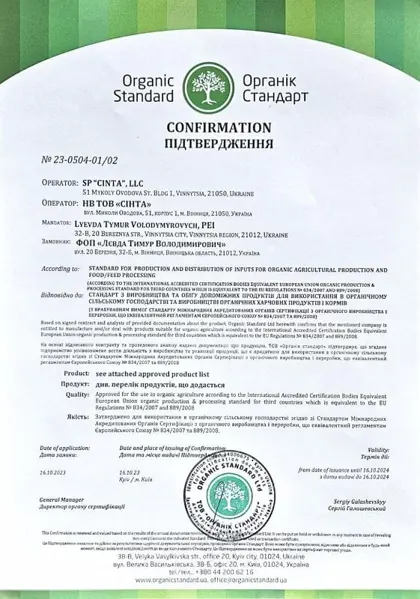
Organic StandardCertificate No. 23-0504-01/02- IFOAM — Organics InternationalMembership of NV LLC Sinta
Patents
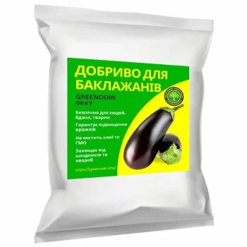
Eggplant fertilizer
GREENODIN GRAY granular organic fertilizer for eggplants grown outdoors and in greenhouses.
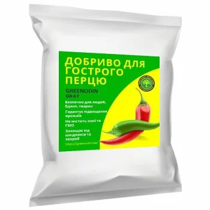
Chili pepper fertilizer
GREENODIN GRAY fertilizer for chili peppers.
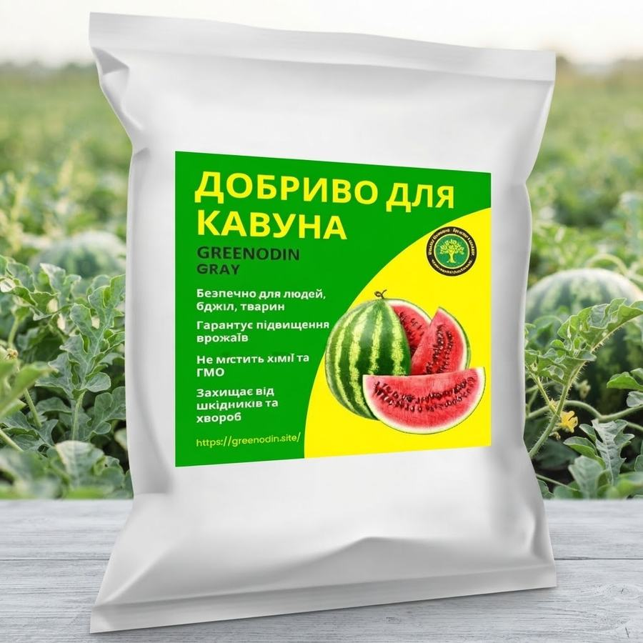
Watermelon fertilizer
GREENODIN GRAY granular organic fertilizer for watermelons.
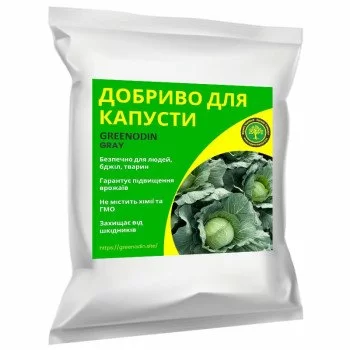
Cabbage fertilizer
GREENODIN GRAY granular organic fertilizer for cabbage.
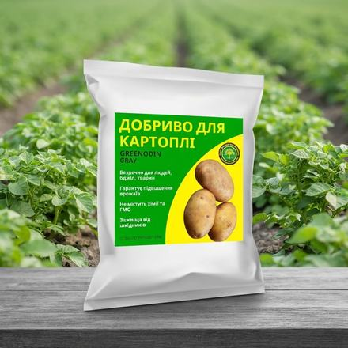
Potato fertilizer
GREENODIN GRAY fertilizer for potatoes: 25 g per plant or per 1 m² at planting; from the second year the rate is reduced…
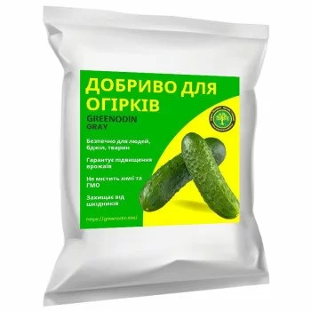
Cucumber fertilizer
GREENODIN GRAY fertilizer for cucumbers grown outdoors and in greenhouses.
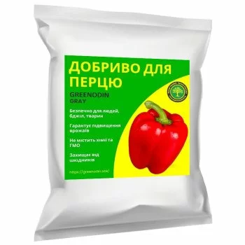
Pepper fertilizer
GREENODIN GRAY granular organic fertilizer for sweet peppers.
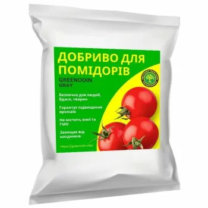
Tomato fertilizer
GREENODIN GRAY organic fertilizer for tomatoes grown outdoors and in greenhouses.
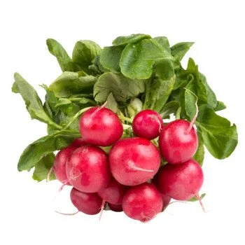
Radish fertilizer
GREENODIN GRAY granular organic fertilizer for radishes.
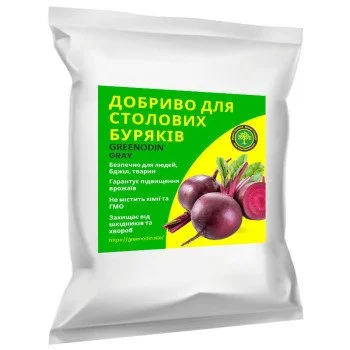
Beetroot fertilizer
GREENODIN GRAY fertilizer for beetroot.
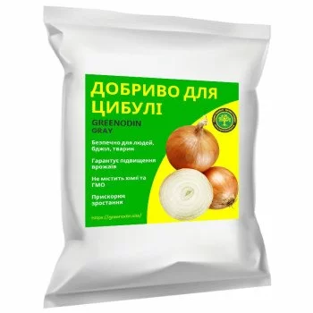
Onion fertilizer
GREENODIN GRAY organic fertilizer for bulb onions.
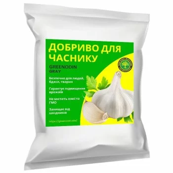
Garlic fertilizer
GREENODIN GRAY fertilizer for winter and spring garlic.